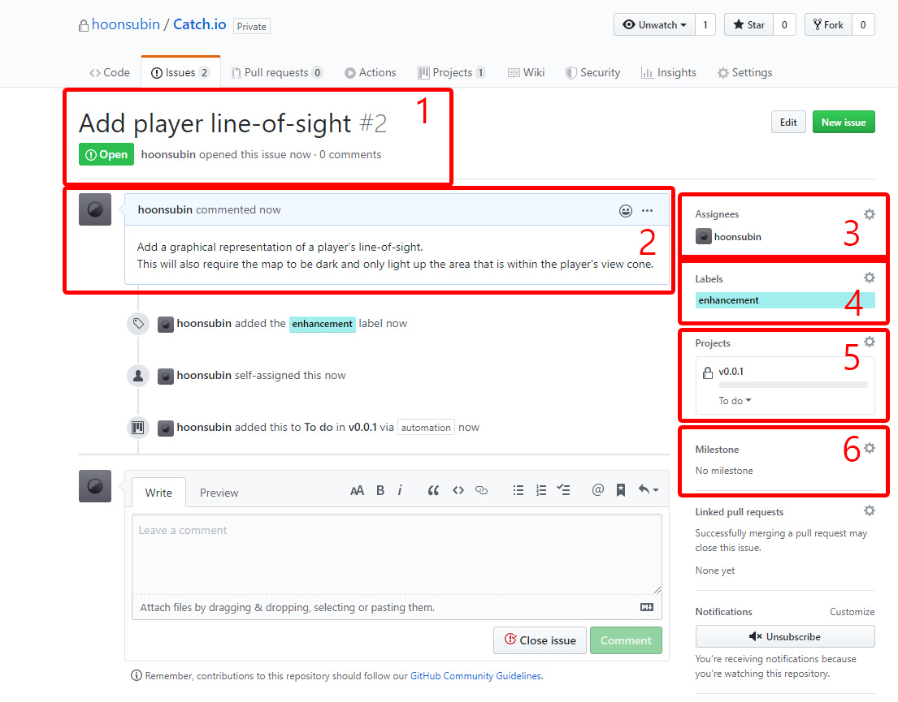

Git Guide
Branches and Forks
The basic idea of branches and PRs is, when implementing a new feature for most projects, you would create a branch that is only for that feature. When the development is done you would open a pull request and merge it with the master. We will elaborate on this idea and create a single standard as game development involves many moving parts that rely on each other and it is important for everyone to be on the same page with this.
There will be mainly four types of branches.
fixbranch: a branch name that is used for commits for patches or fixes that address a bug that came from thefeaturebranch. This does not add anything new in terms of features, but only refactors them. Ex)fix/throw-object.featurebranch: branches that add something new to the game which may break the game or not. Because of how game development works, commits in this branch will inadvertently act similar as thefixbranch (and it is fine to do that as long as you record it!), but one key difference is thatfeaturebranch must add something new. Ex)feature/ai-sensors.developmentbranch: these are the branches that are in active development. They have a very strict rule. First, the name must be the semantic version name. Second, everyfeatureandfixbranches must be derived from this branch and merge back to it when finished (no branch should derive from other branches). Lastly, after merging thedevelopmentbranch with themasterbranch, thedevelopmentbranch should not be touched at all. Ex)development/v-0.0.1bdocumentbranch: this is a special branch that is used exclusively for PR that adds documentation to the repo
In short, branches with the name development must be derived from the master while the fix and feature branches derive from the latest development branch. Only development branches are allowed to merge with master. However, you can only merge when there are no fix or feature branches, and once you merge you can only create a new development branch, no direct commits to master unless the situation calls for it.
Merging a development branch to the master branch will be part of a Milestone.
Forking works similar to the fix and feature branch.
You can freely fork a development branch and merge back to it. But you should never fork and commit to a fix/feature branch unless you made a new one or you have to!
Versioning Scheme
By default, projects will use the Semantic Versioning as the base for the versioning scheme.
Versions are generally used in three different places.
- Github tag/dev branch names
- In-engine version
- In-game graphical version display
In-engine version and the In-game graphical version display will be linked together, allowing the developer to only focus on working with the in-engine version numbering.
Those will have to be changed manually.
Github version names will be taking the form of development branch names like development/v0.1.3a and will also be the name of Github's Projects feature and Milestones feature.
The naming scheme for branch names will be like the following,
development/v[major].[minor].[patch][alpha/beta].
The major number is when we add a huge feature that may change the game as a whole. One example would include a multiplayer mode for a single player only game. Adding on to this, minor versions are additional feature that does not affect the game play flow to a huge degree, but does add something new to the existing game. For example, a new character model or new items. Patch numbers are generally when a game changes its backend code that the end-users does not notice right away and updates that does not add something visible to the game. Like bug fixes and gameplay balancing.
Using Git Projects and Progress Tracking
Todo: This section is outdated. We use Notion as our main project management tool. Please update this.
For tracking the development process, we will be using Git Projects. Git Projects is an automated Kanban for understanding what tasks should be done, what is in progress and what is finished. For this project we will be using the automated Kanban, meaning that issues will be automatically added to the Projects Kanban.
Project names should be the development version that the project will have.
If all the items in the Project are considered to be finished, you can open a new milestone and merge that version with the master branch.
After that you would create a new Project with a new version name.
For adding items to the Kanban, please create a new Issue with the appropriate label.
When adding a new feature to the game, create a new branch with the prefix feature/[feature-name] and open a new issue with the label enhancement.
For fixing bugs or other patches, create a new branch with the prefix fix/[patch-name] and open a new issue with the label fix.
When you open a new issue, that item will be automatically added to the Project Kanban.
GitHub Projects is just a simple method to check the overall progress of the working project and to understand what the developers should be doing. As long as the developer understands to open an issue and creating a new branch before making any changes, there should be no problem.
Opening Issues
As mentioned above, the project's development progress and assigning tasks will be done via opening issues on the repository. Because of this, it is important to understand the format for opening one in a consistent way.

- Issue Title: The title of the feature/fix that the assigned developer will make.
- Description: The detailed description of what this task will be adding. It is best to add a list of things that will be done.
- Assignees: This shows the developers who will be taking on the task that the issue describes.
- Labels: The category of the issue. Mostly it will be either
enhancementorfix. - Projects: The project that this issue will be committing to. This should always be the latest working development build before it is committed to the
masterbranch. - Milestone: This shows which development build this issue belongs to.
Preventing Merge Conflicts
When using Git for version controlling game projects, the team will definitely encounter several critical conflicts.
This generally stems from the following reasons:
- Too much noise - most heavy game engines will create a lot of meta files for various reasons. This is always automatically generated by the engine, which makes it hard to predict how it is going to change. Furthermore, this will clog up the changed file list for each commit and pulls which makes reviewing hard.
- Too many file types - most engines will use their custom file types for managing game objects or settings. Sometimes this will result in files being treated as binaries rather than code. Most cases these are just markup languages with a special file extension, but this still makes it hard for developers to review other's code.
- Large files - not completely related to merge conflicts, but using large media files like
.wavor.pngmakes syncing and merge a time consuming process.
So how can we prevent merge conflicts when working with a big team? There is no single solution for this, but we can come up with commit standards to ensure that we can avoid critical errors.
The following guide will be based on using Unity with Github
- Work on a new scene - if you are adding a new feature or item, create a new scene or duplicate one of the existing scenes and only work on that. This ensures that no scene conflicts will ever happen.
- Only focus on your feature - not limited to game development, but for any collaborative working environment, it is best to only stick on your feature and not try to work on something that is not related to it.
- Create/override prefabs - always make a prefab for game objects that will be used throughout multiple scenes. Furthermore, before committing to the repo, do not forget to update your prefab.